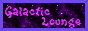

hello !! my name is kas / hayley (kas for right now. will update when that changes)
i am 23 years old and genderfluid but currently leaning very fem.
--------
my pronouns are she/they
--------
i am unfortunately a citizen of the US but like. i wish i wasn't lmao
--------
which. on this note. i am not a democrat or a republican nor am i liberal. i am hard fuckin left
and i don't take that shit lightly. at all. i stand more on the side of anarchism because of how
genuinely broken the system is. and how broken its been for a LONG time with no one choosing
to do anything real about it.
--------
i'm also only putting this here because while i'm doing my best to do something about it,
i am currently unemployed and broke so there's not. a whole lot. i can do lmao.
i have diagnosed bpd that's pretty unmanaged (not necessarily by choice) among other issues.
NOT an excuse for anything and that's not why this is getting added here. i just. i understand
that for the foreseeable time being i can either be really pleasant or
really unpleasant to be around. this does NOT mean i do anything awful to anyone. i just have
a lot of episodes and things that set me off still. i'm 100% saying this as someone who would
find it hard to be around someone like myself but please do not think i am leaving it unmanaged
and untreated. the american healthcare system just uh. makes it very very hard to do anything
about it without a LOT of money that i don't currently have. and very good insurance... which
i also don't have lmao. i don't have any actually.
anywho very long heads up over with
NIN
Fall Out Boy
Green Day
Paramore
My Chemical Romance
drmanhattan
"Weird Al" Yankovic
Toby Fox
Bobby Prince
Mick Gordon
Kelly Bailey
Mike Morasky
Masato Nakamura
c418
Waterflame
NIN - All Albums
Fall Out Boy - Take This To Your Grave
Fall Out Boy - From Under The Cork Tree
My Chemical Romance - All Albums
P!ATD - A Fever You Can't Sweat Out
Paramore - All Albums
Breaking Benjamin - Phobia
drmanhattan - drmanhattan
Green Day - Insomniac
Green Day - nimrod.
Green Day - Warning
Vargskelethor Joel - Super Ghostbusters (Deluxe Edition)
Mick Gordon - DOOM (2016) OST
Trent Reznor and Atticus Ross - The Social Network OST
Kelly Bailey - Half-Life 1 and 2's OST
Mike Morasky - Portal 2: Songs to Test By
portal series
half-life series
celeste
undertale
deltarune
sonic 1, 2, 3k
sonic mania
watch_dogs
night in the woods
superliminial
superhot
super hexagon
saints row the third
crushed in time
duke nukem 3d
doom series
broken reality series
cyberspace outlaw
stray
clone hero
postal 1 and 2
papers please
plants vs zombies
day of the tentacle
the henry stickman collection
there is no game
minecraft
the stanley parable ultra deluxe
pajama sam series
quake
mcpixel series
goat simulator series
dishonored
nimrods
the social network
steve jobs (2015)
the goonies
halloweentown
hunger games franchise
divergent
titanic
twister
(more to add i can't think of all of them rn)
scrubs (original and revival)
the good place
the newsroom
raising hope
my name is earl
young sheldon
georgie and mandys first marriage
malcolm in the middle
kitchen nightmares (original and revival)
its always sunny in philadelphia
(more to add i can't think of all of them rn)
i had a dni list here but on further examination it's not necessary. just don't be a dick and we're fine. or yknow.
try to act like we can be buddy buddy while you're actively advocating against mine and others rights.
i have two discords:
personal - th3.d0wnward.sp1ral
public - gremghost (i don't have access to this acc rn LOL)
please note that especially for my personal account, i don't really accept dms or friend rqs if you're under 21.
youtube: gremghost
newgrounds: gremghost
bandcamp: gremghost
steam: gremghost
if i find more / think of any i missed, i'll update it


